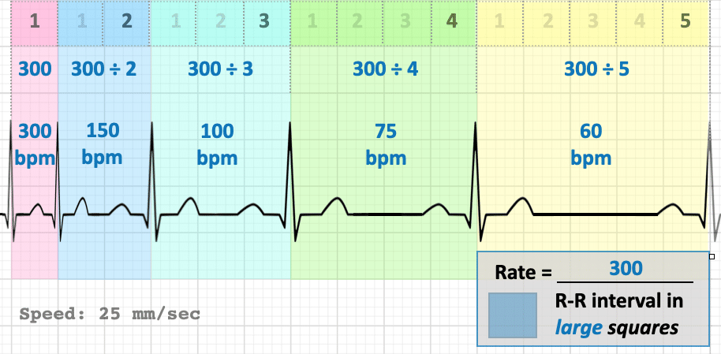
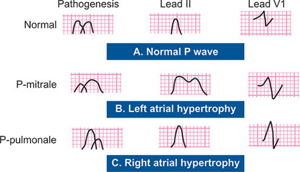
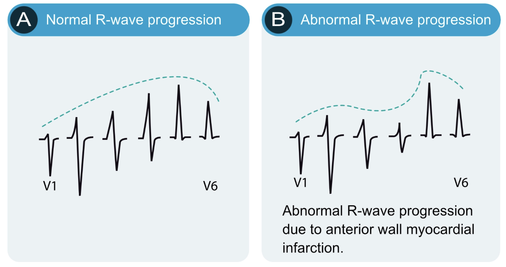
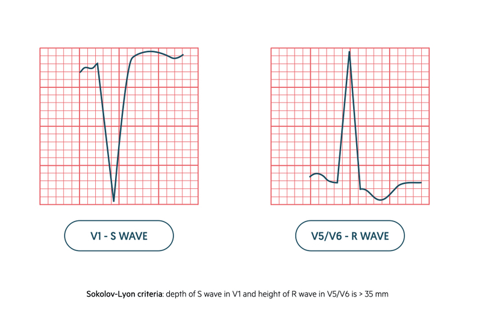

1 Rhythm & sinus check
Rhythm identifies where impulses originate and whether atrial activity is organized or chaotic.
- P wave before every QRS?
- P upright in leads I and II?
- Regular RR intervals?

P–QRS–T relationship
2 Heart rate
Decide early whether the rate itself explains the patient’s symptoms or instability.
- 300 rule for regular rhythms
- 10-second count ×6 for irregular rhythms

300-rule example
3 P waves & atrial size
P-wave morphology reflects chronic atrial pressure and volume load.
- P pulmonale → RAE
- P mitrale → LAE

RAE vs LAE
4 PR interval
The PR interval localizes AV nodal delay or accessory pathway physiology.
- Normal: 0.12–0.20 s
- Prolonged → 1° AV block
- Short PR ± delta → WPW

Short PR with delta wave
5 Axis
Axis helps localize pathology and reflects chronic chamber pressure or conduction disease.
- I & II positive → normal
- LAD / RAD / extreme axis patterns

Axis determination
6 QRS duration
QRS width tells you whether depolarization uses the His–Purkinje system or myocardium.
- Narrow <0.10 s
- BBB ≥0.12 s
7 Precordial transition
Precordial transition reflects ventricular orientation and chamber dominance.
- Normal V3–V4
- Early vs late transition

Normal R-wave progression
8 Voltage & hypertrophy
Voltage patterns suggest chronic pressure or volume overload.
- LVH ± strain
- RVH with RAD

LVH example
9 Infarction
This step asks whether myocardial necrosis is present and where.
- Inferior / anterior / lateral patterns

Inferior STEMI
10 ST–T changes
ST–T abnormalities reflect ischemia, injury, or secondary repolarization changes.
- ST elevation, depression, T inversion

ST–T patterns
11 QT & electrolytes
QT abnormalities predict arrhythmia risk and electrolyte toxicity.
- HyperK, HypoK, QT prolongation

QT examples